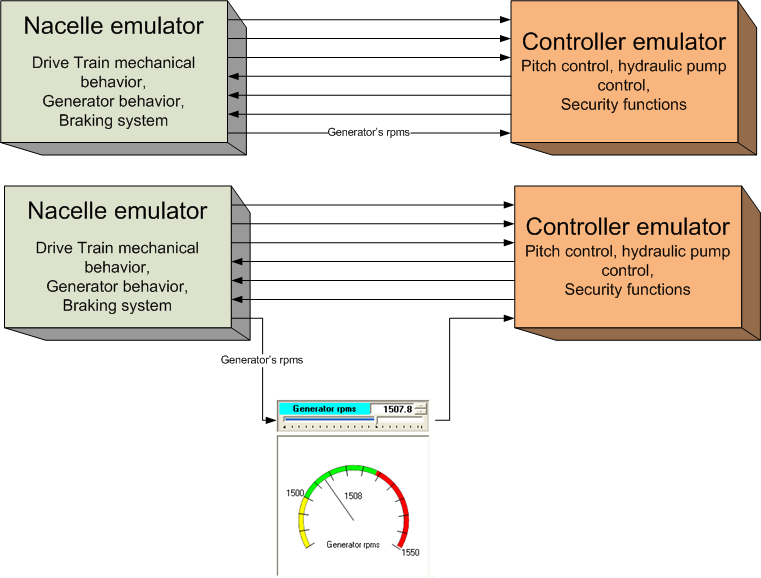
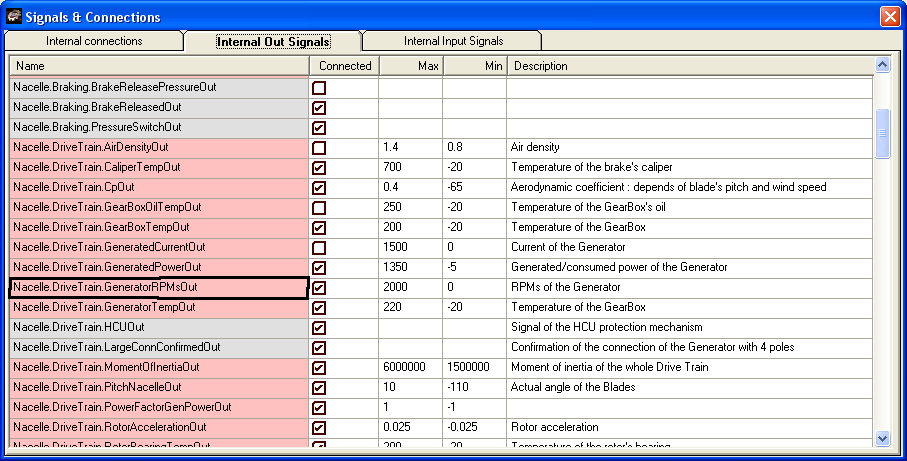

Let's take as example the monitoring (presentation of values) and modification capabilities in the SynopticDriveTrain for the Generator's rpms.
(Have a look to the SynopticDriveTrain Synoptic)
A simplified "wiring" between the Nacelle emulator and the Controller emulator is presented in the next figure.

The computations of the Generator's rpms is part of the Nacelle emulator (see Emulated Nacelle - Generator) that makes the computed value as a signal (in the "Basic Single Wind Turbine" configuration file, this signal is named "Nacelle.DriveTrain.GeneratorRPMsOut": you can check that with the "Signals & Connections" synoptic". See next figure).
